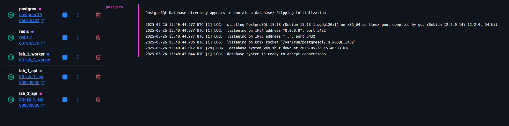

Создание эндпоинта для вызова парсера из api
@router.post("/parse")
def parse(url: str):
try:
response = requests.get(url)
response.raise_for_status()
parser = BookParser(url=url)
asyncio.run(parser.run())
return {"message": "Parsing completed"}
except requests.RequestException as e:
raise HTTPException(status_code=500, detail=str(e))
Создание Dockerfile
Dockerfile для api из лабораторной 1.
FROM python:3.13
WORKDIR /code
COPY requirements .
RUN pip install --no-cache-dir --upgrade -r /code/requirements
COPY ./Lr1 /code/Lr1
CMD ["uvicorn", "Lr1.main:app", "--host", "0.0.0.0", "--port", "8000"]
Dockerfile для парсера.
FROM python:3.13
WORKDIR /code
COPY requirements .
RUN pip install --no-cache-dir --upgrade -r /code/requirements
COPY . .
#CMD ["uvicorn", "Lr3.main:app", "--host", "0.0.0.0", "--port", "8000"]
Создание docker-compose.yml
services:
lab_1_api:
build:
context: ../Lr1
dockerfile: Dockerfile
restart: always
container_name: lab_1_api
ports:
- "8000:8000"
depends_on:
- postgres
env_file:
- ../../.env
lab_3_api:
build:
context: ../Lr3
dockerfile: Dockerfile
restart: always
container_name: lab_3_api
command: uvicorn Lr3.main:app --host 0.0.0.0 --port 8000
ports:
- "8888:8000"
env_file:
- ../../.env
depends_on:
- postgres
- redis
postgres:
image: postgres:15
container_name: postgres
restart: always
environment:
POSTGRES_USER: ${DB_USER}
POSTGRES_PASSWORD: ${DB_PASSWORD}
POSTGRES_DB: ${DB_NAME}
ports:
- "6666:5432"
volumes:
- ./postgres_data:/var/lib/postgresql/data
lab_3_worker:
build:
context: ../Lr3
dockerfile: Dockerfile
restart: always
container_name: lab_3_worker
command: celery -A Lr3.tasks worker --loglevel=info
env_file:
- ../../.env
depends_on:
- postgres
- redis
redis:
image: redis:7
container_name: redis
restart: always
ports:
- "6379:6379"
Создание очереди с помощью Celery и Redis
Создание задачи.
celery_app = Celery('tasks', broker='redis://redis:6379/0', backend='redis://redis:6379/0')
@celery_app.task
def parse_task(url: str):
parser = BookParser(url=url)
return asyncio.run(parser.run(count_of_workers=10))
Эндпоинт для добавления задачи в очередь.
@router.post("/parse/task")
async def parse_task_create(url: str):
task = parse_task.delay(url)
return {"task": task.id}
Эндпоинт для получения задачи по id.
@router.get("/parse/task/{task_id}")
async def get_task(task_id: str):
task = parse_task.AsyncResult(task_id)
return {"task": task.id, "status": task.status}
Результат
